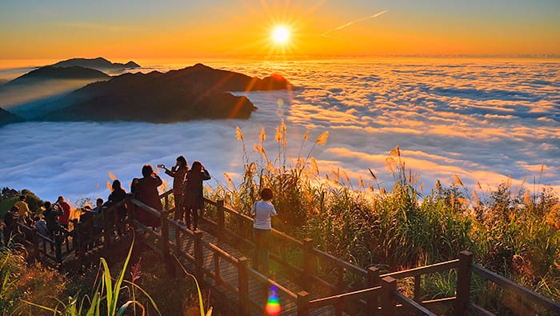
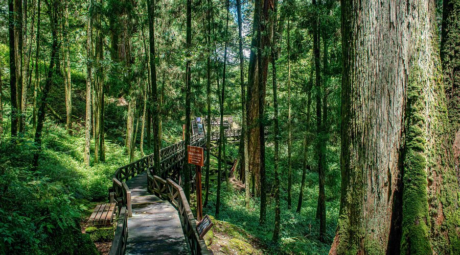
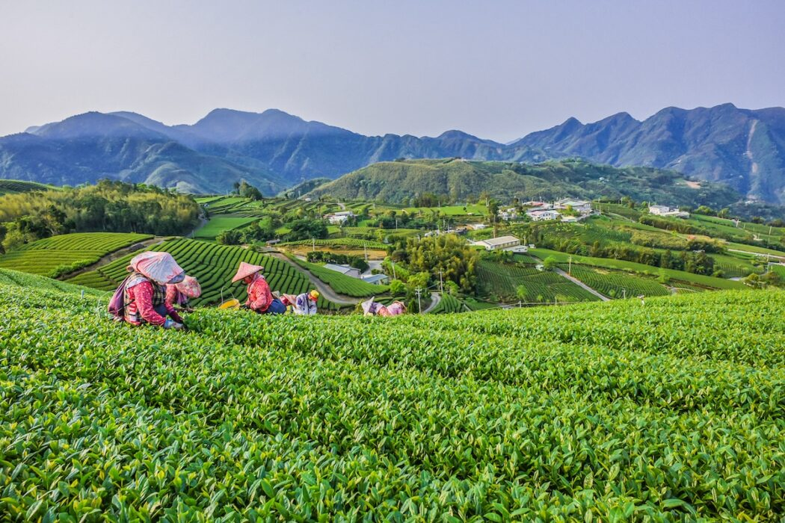

- Region
- South · Chiayi County
- Difficulty
- Moderate
- Time needed
- 1–2 days
- Best months
- Mar–Apr, Oct–Dec
What to do
Watch the sunrise at Zhushan
Take the early sunrise train or walk up to Zhushan (祝山) to see the sun rise above the sea of clouds and Yushan's peaks.
Walk the Giant Trees Trail
Wooden boardwalks lead through a forest of huge red cypress trees (巨木群棧道), some over 1,000 years old.
See the Sister Ponds
The Sister Ponds (姊妹潭) are two small, quiet ponds in the forest with a little pavilion on an island.
Ride the Alishan Forest Railway
The historic narrow-gauge railway (阿里山林業鐵路) climbs from the lowlands into the mountains through tunnels and switchbacks.
Stop at Fenqihu
Fenqihu (奮起湖) is an old railway town halfway up the mountain with a small old street.
What to eat
Fenqihu railway lunch box 奮起湖便當
A classic rice box with pork, egg and vegetables, often served in a metal tin.
High-mountain oolong tea 高山茶
Alishan's high-altitude tea is fragrant and smooth. Many shops let you taste before buying.
Alishan coffee 阿里山咖啡
Coffee is grown on the mountain slopes; try a cup at a local café.
Bamboo tube rice 竹筒飯
Sticky rice cooked inside bamboo, a common mountain snack.
Getting there
- From Taipei Main Station, take the HSR to Chiayi (嘉義) HSR station (or a TRA train to Chiayi station). about 1.5 h (HSR)
- Take the Taiwan Tourist Shuttle – Alishan route from Chiayi HSR or Chiayi TRA station to the Alishan Forest Recreation Area. about 2.5 h
- Alternative: ride the Alishan Forest Railway from Chiayi. Book tickets in advance, as seats sell out. about 2.5–3.5 h
The road is long and winding; take motion-sickness medicine if you need it. There is an entrance fee to the recreation area.
Best season
Cherry blossoms bloom around March–April, the area's busiest time. Autumn and early winter usually give the clearest sunrises and seas of clouds. Summer afternoons are often rainy, and winter nights can drop near freezing.
Photos



Tips
- Bring warm layers. Alishan sits at over 2,000 m and is much colder than the plains.
- Stay overnight in the recreation area or nearby if you want to see the sunrise.
- Check the sunrise time and train schedule the evening before.
- Book the forest railway and accommodation early for cherry-blossom season.
Last checked: 2026-11. Bus routes, train times and opening hours change, so please confirm on official websites before you go.